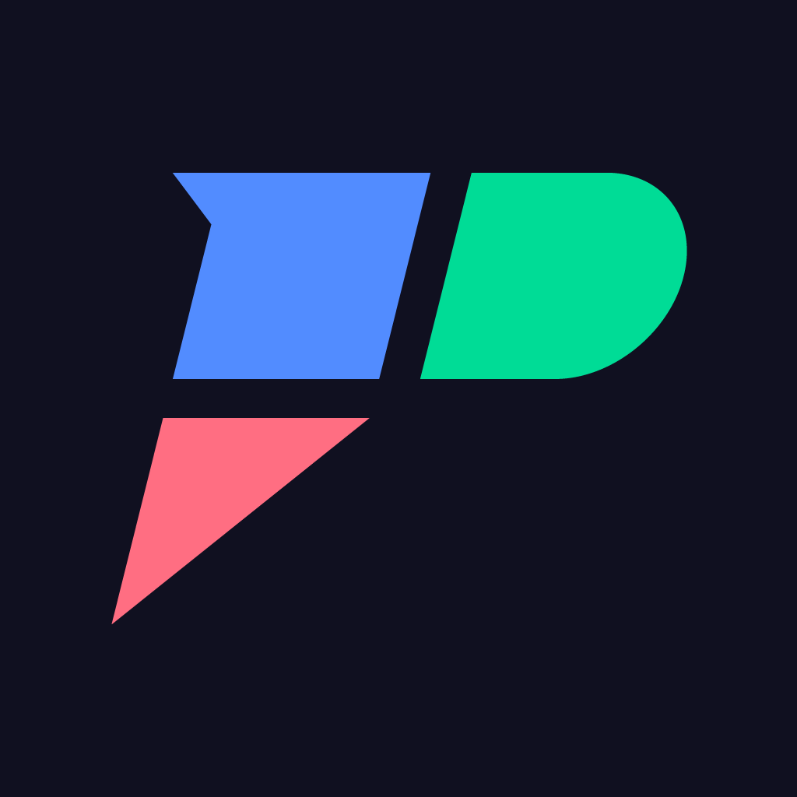
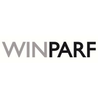

Albert Villanueva
iOS Engineer
I build native iOS apps with clean architecture, strong foundations and long-term reliability.
MoveGate – Focus & Health
Independent Creator · iOS App
A focus and digital well-being app designed to reduce screen distraction and encourage movement throughout the day. Uses Screen Time APIs, activity monitoring and SwiftUI to create a habit-building experience that helps users stay intentional with their device usage.

PlayFit – Exercise Habits
Independent Creator · iOS App
A lightweight fitness app built to help users create a consistent weekly exercise habit. It includes guided bodyweight routines, habit tracking and a clean interface focused on making workouts simple and sustainable.

Cooltra – Shared Mobility
Lead iOS Developer
Led the development of Cooltra’s European scooter-sharing app, redesigning its architecture, migrating the codebase to SwiftUI and modernizing backend communication. Delivered a cleaner, more scalable app supported by a strong CI/CD process and thousands of Swift Testing tests.

Geomotion Games
iOS Developer
Developed interactive apps and educational games using UIKit, Swift and MVVM. Collaborated closely with designers and backend teams to ship polished features, ensuring performance and a smooth in-app experience for thousands of users.

Accenture
iOS Developer
Built enterprise-grade iOS solutions using MVC, Core Data and REST APIs. Focused on delivering stable and maintainable applications for clients across different industries, working in multidisciplinary, fast-paced teams.

Shootr
iOS Developer
Contributed to a real-time second-screen app used during TV shows. Implemented new features, optimized Core Data storage and enhanced live event performance in a highly dynamic environment.

WinParf Services
iOS Developer
First professional iOS role, working with Objective-C on an enterprise product. Learned the fundamentals of native development, debugging, architectural thinking and delivering features in a production environment.